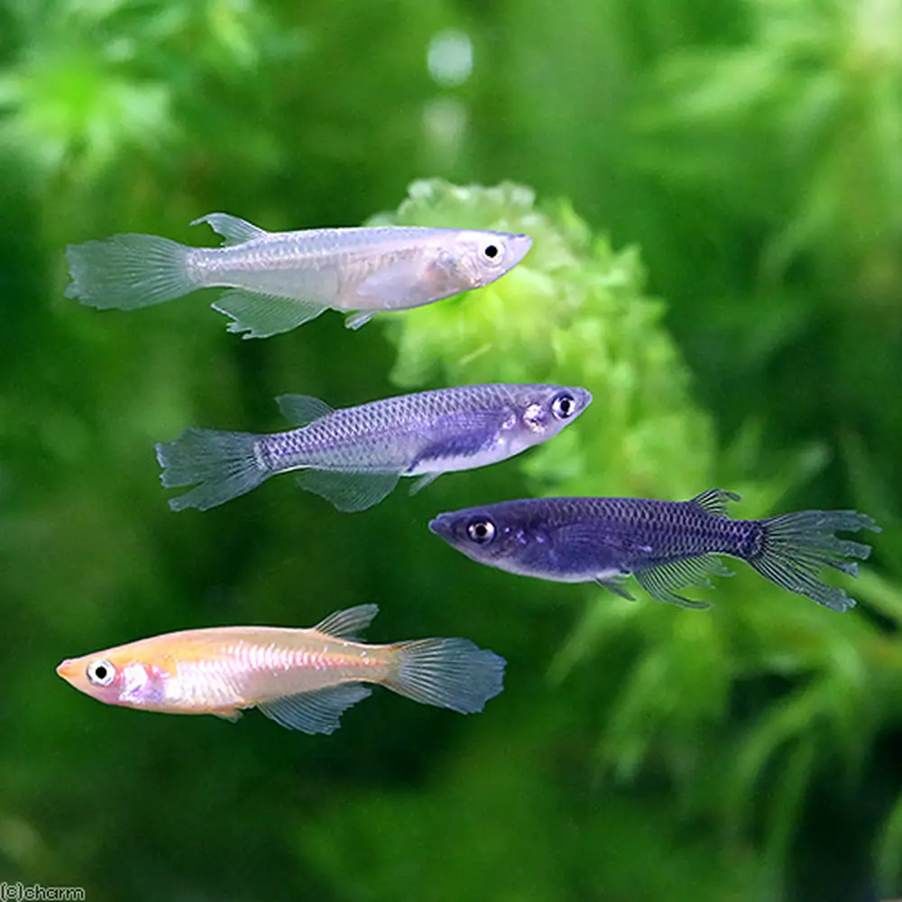
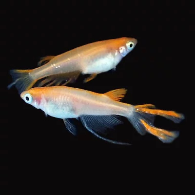
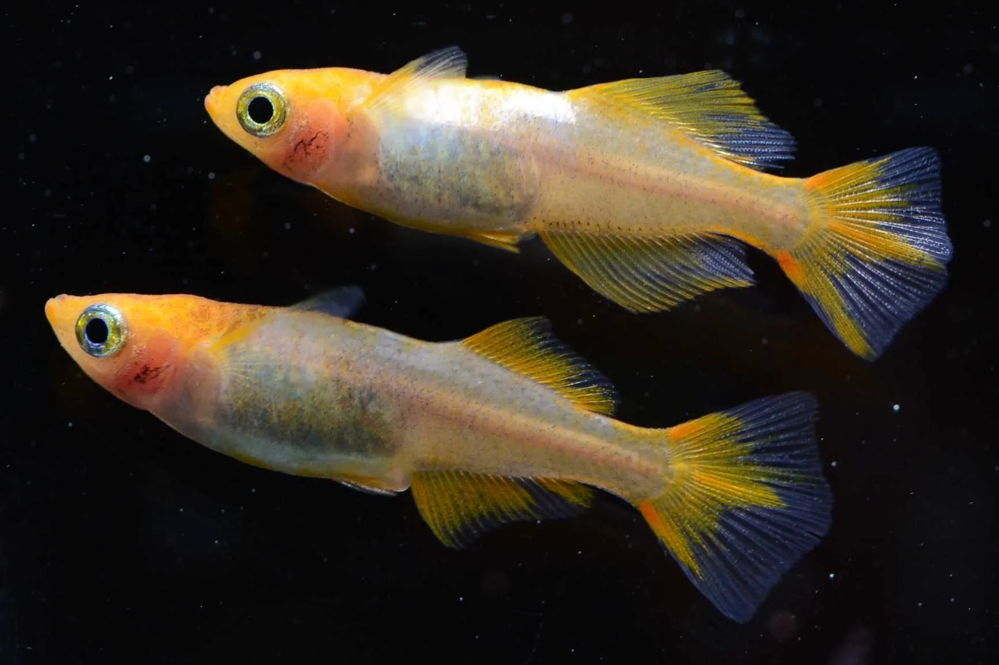
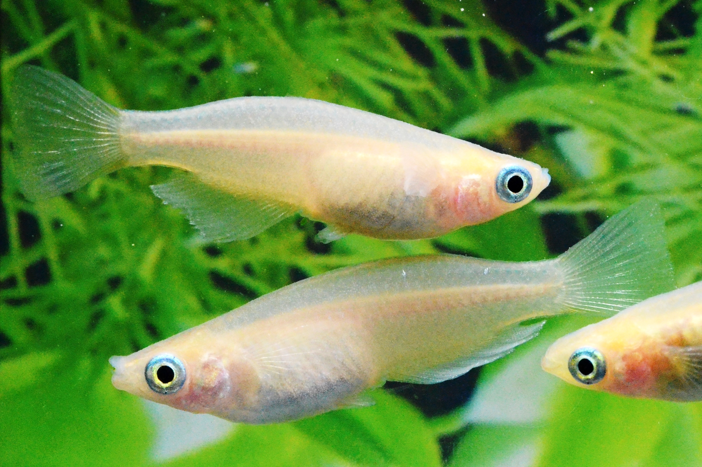
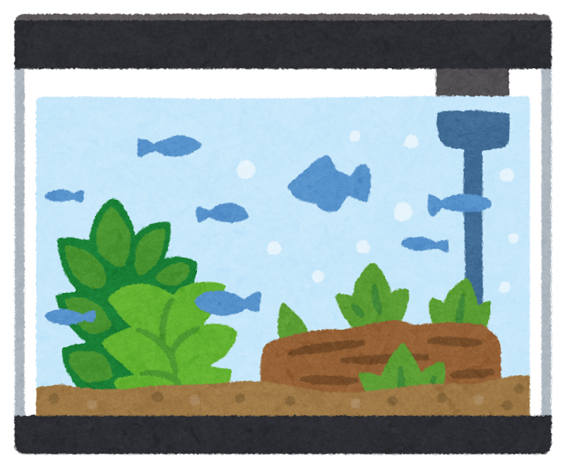

- ヒレ長

全身の佐那ざまなヒレが長い改良種。優美な見た目から女性や舞踊の名前を付けられることが多い。- スワロー

ヒレの一部のみが長くなっている改良種。レースのようにひらひらとしたヒレを持ち、幽霊のような静かな美しさがある。- ヒレ美

ヒレまで体色が乗っている改良種。どの退職でもヒレは透明なままであることが多い為、一際目を引く品種が多い。- マルコ

背びれがない改良種。背中の鱗が目立ちやすい為、変わりヒレでは珍しく水槽より鉢などの上からの観賞に適している。- 
マルコなどのほかの部分を目立たせるための例外はあるが、ほとんどのヒレ形状は美しいヒレを目立たせるために横から観賞できる水槽での飼育に適している。長いヒレは傷つきやすい為、人口水草よりは生きた水草などの柔らかい装飾がよいだろう。